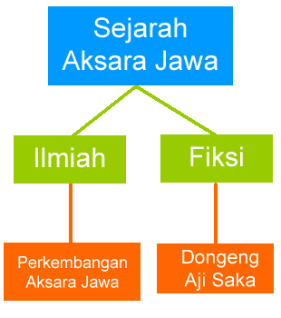
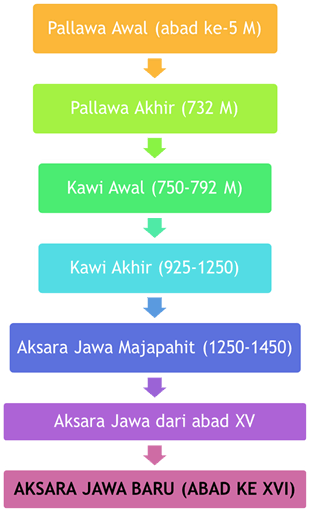

<div id="selayang-2">
    <div id="selayang-1-content" class="scrollbar">
        <center>
        
        <br /><hr /><br />
        <p>Sejarah Ilmiah</p>
        
        <br /><hr /><br />
        <p>Sejarah Fiksi</p>
        
        </center>
    </div>
    <a ng-click="go('/selayang');">
        
    </a>
</div>
